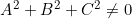
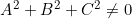

Specijalni položaji ravnine u prostoru
- Opći oblik jednadžbe ravnine u prostoru glasi
 pri čemu je .
pri čemu je . - U slučaju da su neki od brojeva
 jednaki nula, ravnina se nalazi u nekom specijalnom položaju s obzirom na koordinatni sustav.
jednaki nula, ravnina se nalazi u nekom specijalnom položaju s obzirom na koordinatni sustav. - Ako je , tada dobivamo trivijalnu relaciju koju zadovoljava svaka točka u prostoru pa u tom slučaju to nije ravnina.
- Ako je i , tada niti jedna točka u prostoru ne zadovoljava gornju jednadžbu.
- Sve ostale kombinacije da neki od brojeva budu jednaki nula, daju neki specijalni položaj ravnine s obzirom na koordinatni sustav. Svaki od tih slučajeva je ovdje posebno naveden i vizualiziran.
- U gornjem desnom kutu prozora možete odabrati jednu od kombinacija u kojoj su neki od brojeva jednaki nula. Automatski se vizualizira pripadna ravnina.
- U gornjem lijevom kutu su prikazane informacije o trenutno odabranoj ravnini. Također, pomoću spomenutih tipki na tastaturi možete dobiti još neke druge ravnine s navedenim oblikom jednadžbe (ukoliko ima više takvih ravnina).
- Informacije o ravnini možete po želji otvoriti ili zatvoriti klikom na tipku u gornjem lijevom kutu prozora.
- Pomoću srednje tipke miša možete približavati ili udaljavati kameru od objekta, a pomoću lijeve tipke miša možete se kretati oko objekta.